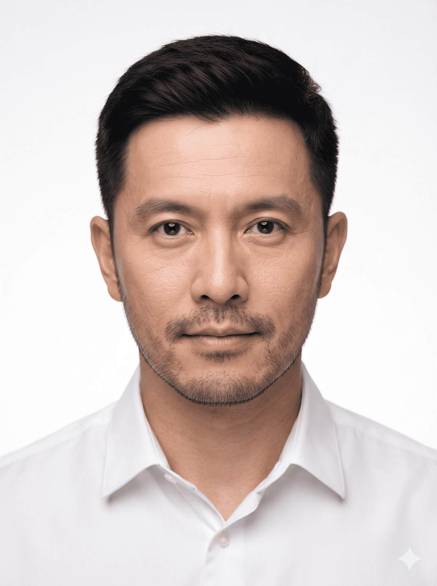

Professional passport portrait
Create a centered, evenly lit portrait while preserving the reference subject’s identity and natural appearance.

Copy this prompt
Create an ultra-realistic, high-resolution passport-size portrait of the man from the reference image, preserving his exact face, facial structure, skin tone, proportions, eyes, nose, lips, jawline, eyebrows, and all unique facial features without any modifications. The identity must remain identical to the reference photo. He is facing directly toward the camera with a neutral, natural expression, and both eyes fully open. His head is perfectly centered with official passport-style framing, showing the shoulders and upper chest. Maintain natural skin texture with realistic pores and soft complexion—avoid excessive beauty filters or artificial smoothing. Style his hair with a neat, professional taper cut. The hair should be deep jet black, naturally styled, slightly shorter on the sides and neatly trimmed on top, suitable for a professional passport portrait. If applicable, keep neat, well-groomed facial hair (such as a clean, natural-looking five o'clock shadow). He is wearing a crisp plain white collared shirt with no patterns or logos. Use a pure white seamless studio background with soft, even lighting from both sides to eliminate harsh shadows. Ensure balanced exposure, true-to-life skin tones, sharp focus on the eyes, and high facial detail. The image should look like it was captured using a professional DSLR camera with an 85mm portrait lens, featuring realistic depth, natural color grading, studio-quality lighting, and ultra-high resolution.
How to use it
- Attach a clear, front-facing reference photograph.
- Paste the prompt into your image tool and review the generated result.
- Check official photo requirements for your country; AI-generated portraits may not be accepted for identity documents.